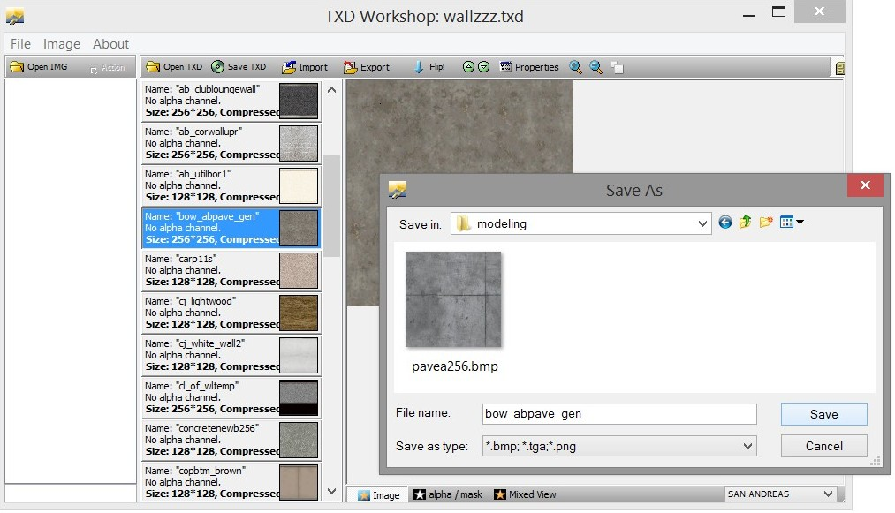
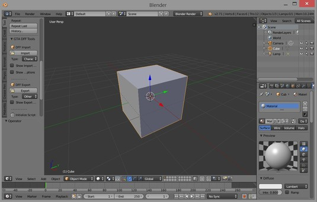
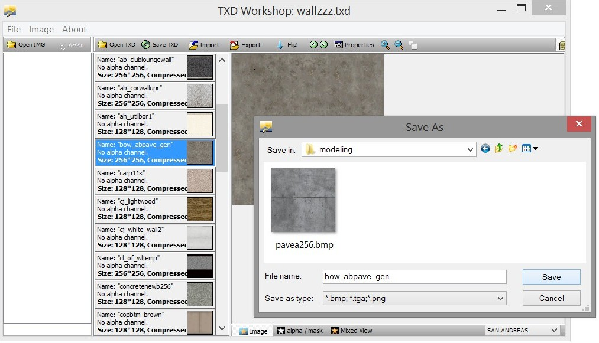
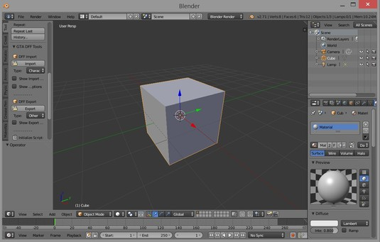

24.10.2017, 10:40
(
Last edited by Kalcor; 24/10/2017 at 01:11 PM.
)
The main export tools for GTA:SA are written for 3dsmax. But if you're like me and don't model professionally, the cost of 3dsmax can be a bit much.
Blender is a free modeling program with importers and exporters for many different games, including GTA:SA.
Tools needed:
- blender 2.63+
- gtatools blender scripts by ponz
- TXD Workshop by TurtleL
- kdff.exe command line tool (comes with the SA-MP server package)
- Collision File Editor II 0.4 BETA
Instructions for getting started.
- Download and install blender. Check that it runs.
- Extract the gtatools scripts in to your blender addons folder e.g. C:\blender-2.71-windows64\2.71\scripts\addons. You should then have a "space_view3d_gta_tools" folder in your blender addons folder.
- Enable GTA tools in blender by going to File > User Preferences > Addons > and checking 3D View: GTA Tools.
We'll be exporting blender's default cube as a dff with a collision attached.
Find a texture for the cube. Open a txd material in TXD workshop and export it to something blender can read like bmp or png.

Step 01) Open up blender.

Step 02) Game engines use triangles to render, but modeling programs support different types of edges like quads (squares). We need to triangulate the cube's faces so it can be exported to the game.
02_triangulate_cube.mp4
Step 03) Create a UV map by running UV unwrap and apply the texture we exported earlier.
03_add_cube_texture.mp4
Step 04) Make sure the material name in blender matches the material name in our txd file.
04_change_material_to_txdmatname.mp4
Step 05) Export the cube as a dff and we'll attach a collision. I named my cube as testcube1.dff.
05_export_cube.mp4
Now we need to use the kdff.exe tool in the server package to generate a collision (.col file) then attach the collision to the dff. Copy the kdff.exe tool to the folder where you are exporting your models, then open a command prompt, cd to that folder, then run kdff on your dff file. Example:
In the above command, we used kdff to generate a simple box collision for our testcube. Now we should attach this collision to the dff file.
At this point, our final model file testcubeC.dff is ready. We just need to make sure our texture is in wallzzz.txd and has the correct material name. We could load this in to the artconfig.txt and spawn it with /crobj.
If we spawn it like this it'll look dull because we did not apply any lighting. Everything in GTA is prelit, that means the lighting information is embedded in the dff. We should apply some vertex lighting now.
Step 06) Bake lighting to vertex colors, export the dff again and reattach the col. Make sure Shadeless is turned off in the material tab so we can see the lights being applied to the model.
06_vertex_lighting.mp4
Step 07) After we've re-exported our dff, reattached the col so we have testcubeC.dff ready, we can go ahead and see our final result.
07_test_cube.mp4

More on kdff.exe
kdff can generate 3 types of collision files: empty, box, mesh. 'empty' is for objects that don't need a physical collision, such as objects attached to players. 'box' mode will generate a single box around the object. A box is suitable for many simple interior objects like fridges, plants etc. 'mesh' mode will use the object's faces to create a proper collision. After exporting in 'mesh' mode, you should take the .col file in to 'Collision Editor II' and generate face groups and also set the material type of the surfaces if needed.
Blender is a free modeling program with importers and exporters for many different games, including GTA:SA.
Tools needed:
- blender 2.63+
- gtatools blender scripts by ponz
- TXD Workshop by TurtleL
- kdff.exe command line tool (comes with the SA-MP server package)
- Collision File Editor II 0.4 BETA
Instructions for getting started.
- Download and install blender. Check that it runs.
- Extract the gtatools scripts in to your blender addons folder e.g. C:\blender-2.71-windows64\2.71\scripts\addons. You should then have a "space_view3d_gta_tools" folder in your blender addons folder.
- Enable GTA tools in blender by going to File > User Preferences > Addons > and checking 3D View: GTA Tools.
We'll be exporting blender's default cube as a dff with a collision attached.
Find a texture for the cube. Open a txd material in TXD workshop and export it to something blender can read like bmp or png.

Step 01) Open up blender.

Step 02) Game engines use triangles to render, but modeling programs support different types of edges like quads (squares). We need to triangulate the cube's faces so it can be exported to the game.
02_triangulate_cube.mp4
Step 03) Create a UV map by running UV unwrap and apply the texture we exported earlier.
03_add_cube_texture.mp4
Step 04) Make sure the material name in blender matches the material name in our txd file.
04_change_material_to_txdmatname.mp4
Step 05) Export the cube as a dff and we'll attach a collision. I named my cube as testcube1.dff.
05_export_cube.mp4
Now we need to use the kdff.exe tool in the server package to generate a collision (.col file) then attach the collision to the dff. Copy the kdff.exe tool to the folder where you are exporting your models, then open a command prompt, cd to that folder, then run kdff on your dff file. Example:
Quote:
|
c:\>cd c:\gtasa\03server\models\modeling c:\gtasa\03server\models\modeling>kdff.exe -g box -d testcube1.dff -o testcube1.col |
Quote:
|
c:\gtasa\03server\models\modeling>kdff.exe -a -d testcube1.dff -c testcube1.col -o testcubeC.dff |
Quote:
|
artconfig line: AddSimpleModel(-1,19379, -2001, "testcubeC.dff", "wallzzz.txd"); |
Step 06) Bake lighting to vertex colors, export the dff again and reattach the col. Make sure Shadeless is turned off in the material tab so we can see the lights being applied to the model.
06_vertex_lighting.mp4
Step 07) After we've re-exported our dff, reattached the col so we have testcubeC.dff ready, we can go ahead and see our final result.
07_test_cube.mp4
More on kdff.exe
kdff can generate 3 types of collision files: empty, box, mesh. 'empty' is for objects that don't need a physical collision, such as objects attached to players. 'box' mode will generate a single box around the object. A box is suitable for many simple interior objects like fridges, plants etc. 'mesh' mode will use the object's faces to create a proper collision. After exporting in 'mesh' mode, you should take the .col file in to 'Collision Editor II' and generate face groups and also set the material type of the surfaces if needed.